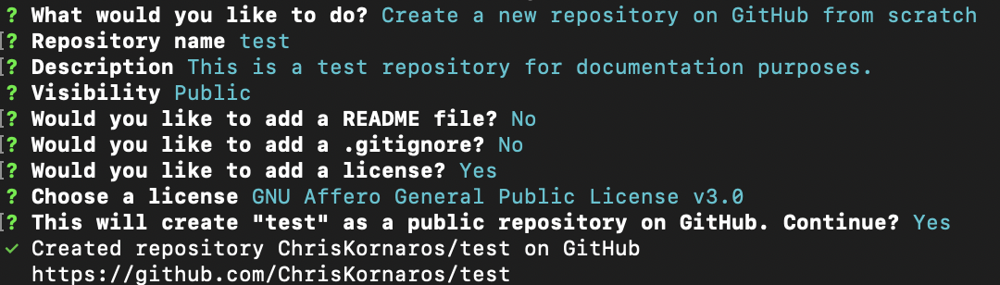

uv, the Python Project and Package Manager
A basic guide on using uv the package and projects manager for Python developers.
Introduction
If you’re using VS Code, here are some useful shortcuts. - Note, use CMD-K CMD-S to open the keyboard shortcuts. - SHFT-CMD-i inserts a code block
uv is an Open Source project by Astral, the makers of ruff, that is self described (and worthy of the title) as an extremely fast Python package and project manager, written in Rust.
🚀 A single tool to replace pip, pip-tools, pipx, poetry, pyenv, twine, virtualenv, and more.
⚡️ 10-100x faster than pip.
🐍 Installs and manages Python versions.
🛠️ Runs and installs Python applications.
❇️ Runs scripts, with support for inline dependency metadata.
🗂️ Provides comprehensive project management, with a universal lockfile.
🔩 Includes a pip-compatible interface for a performance boost with a familiar CLI.
🏢 Supports Cargo-style workspaces for scalable projects.
💾 Disk-space efficient, with a global cache for dependency deduplication.
⏬ Installable without Rust or Python via curl or pip.
🖥️ Supports macOS, Linux, and Windows.
I’m only just beginning to learn and use the tool in my own projects (including converting my existing project environments to uv) and from what I’ve seen it’s going to make life much easier. That being said, while you overwrite the muscle memory developed for years with pip and venv, there will be some growing pains; however, for those who are less familiar with what I’m talking about, I’ll still explain some basic concepts and snags that I both run and ran into.
Basic workflow and guide
Concepts to Know Before Getting Started
- Basic knowledge of directories, bash (zsh in the case of MacOS), and using the CLI bash
- Basic knowledge of Python, common project structures, and simple workflows Python
- Basic knowledge of git (for local version control) and GitHub (for collaboration) git and GitHub basics
Initializing a Project
Local Repository
The nice thing about uv is that it’s designed to make Python development easier, so there aren’t any head-scratching gotchas.
For the sake of this example and entire template, let’s assume I’m currently sitting in my main directory. For some that might be home, others app, for MacOS the default is /usr/yourusername, or maybe you prefer to put all projects in a Documents or Projects folder. Anyways, to start up a project you can do one of two things:
- Have uv do everything, and then change directories
uv init uv_basic cd uv_basic
- Create the directory, change directories, and then have uv do everything
mkdir uv_basic cd uv_basic uv init
This will create 4 files and initalize a local git repository:
.python-version.pyproject.tomlhello.pyREADME.md.git.gitignore
The nice thing about uv is that it autopopulates your .gitignore file with a few files and patterns, not to mention, it provides some basic tagging for what it puts in there. Just open the file (it’s plain text) to see. Since I’m saving my progress with this repo using git, I want to keep the overall file size down. So, I also included the .html and .ipynb file that Quarto generates because they can get large fast. Additionally, when you initialize your GitHub repo with the CLI’s repo creation process, I don’t include a README or .gitignore, because those are included in uv init.
Remote Repository
For anyone familiar with software development you’ve probably heard of GitHub or GitLab. I’m more familiar, professionally and personally, with GitHub (which is what I’ll be using in this example); however, there are a large amount of people that prefer GitLab because it is better for some enterprise and personal use cases– GitHub vs. GitLab. For this, you’ll want to install the GitHub CLI. Then, you can follow along.
- Verify the installations and make sure to get your credentials setup, in git
which ghandwhich git
- Add your name and email
git config --global user.name "Your Name"git config --global user.email "your-email@example.com"
- Authenticate access to GitHub
gh auth login- Using the CLI option, follow the instructions
- Select
HTTPSfor the easier connection option
- Verify you have proper access to your GitHub
gh auth status
github.com
✓ Logged in to github.com account itsmeChis (keyring)
- Active account: true
- Git operations protocol: https
- Token: gho_************************************
- Token scopes: 'delete_repo', 'gist', 'read:org', 'repo', 'workflow'gh repo list- Assuming you haven’t, create your project repo from the CLI (you can also do so using the GitHub.com GUI, but I prefer this way to reinforce my learning)
gh repo createCreate a new repository from scratchuv basic- optional description
PublicGNU Affero General Public License v3.0Which license do you need? 
- Set the newly created repo as the local git repo’s upstream
- This will result in an error (
git pull) - Set the global config to merge git pull
- git pull with a commit message
- git status to verify
- git push
- This will result in an error (
Adding and managing dependencies
Thus far, the workflow with uv isn’t too dissimilar from using pip and venv, but managing dependencies and testing scripts is where uv shines. As you’ll see below, with pip and venv, you have to manually create the virtual environment, activate it, install dependencies, manage requirements files, and then run your script. With uv, however, almost all of that is done automatically and things like uv pip list or uv venv are only there for backwards compatibility. A lot of the tedious pieces of the DevOps workflow are now obsolete or handled in the background.
Using pip and venv
When using a combination of pip and venv, your typical workflow is straightforward, but becomes complicated if you need to uninstall certain packages or make quick, iterative tests of code.
mkdir uv_basic
cd uv_basic
python -m venv .venv
source .venv/bin/activate
pip install duckdb
pip install numpy
pip freeze > requirements.txt
python script.py
# Realize you don't need numpy, so you want to uninstall it and keep your environment cleaner
deactivate
rm -r .venv
python -m venv .venv
source .venv/bin/activate
# Two options here, delete numpy from requirements.txt, not scalable with many packages, or reinstall just duckdb, also not scaleable
pip install duckdb
pip freeze > requirements.txt
python script.pyAs you can see, the initial workflow isn’t horrible, but if you need to make a change to the environment or just want to test something small, the number of steps quickly multiplies.
Using uv
Compare that with the streamlined uv workflow.
uv init uv_basic
cd uv_basic
uv add duckdb
uv add numpy
uv run script.py
uv remove numpy
uv run script.pyThe workflow improvements and efficiency should be obvious. The nice thing is that uv functions as your standalone virtual environment, without the need for activation or deactivation. Using uv add will add a dependency to both your pyproject.toml file and your uv.lock file. Additionally, if you are more familiar with verifying using pip, running uv pip list will show that the package is there (although the pip functionality is obsolete and only for backwards compatibility at this point). If you want to remove a package, simply use uv remove and that will also remove it from the .toml and .lock files. The last feature you’ll need to understand (to use uv at a basic level) is uv sync. Simply put, it syncs your environment with the project’s dependencies/lock file. This ensures that the exact versions specified in your lockfile are used in your environment– dependencies may be added, removed, or updated if there are updates to the declared dependencies.
To cap this off, here are some common use cases for uv sync: - Run uv sync (without –frozen) to keep dependencies up-to-date and to resolve changes. - Use uv sync –frozen to validate dependencies without altering them
Converting your Legacy Projects to uv
Now that you’ve seen the benefits of uv, as well as the workflow differences, you probably want to give it a try or even convert entire projects to uv. The good news is that this is simple and only requires a few modifications to get things up and running. The general workflow is the same as I outlined above, you’ll just be cleaning up your local environment and reinstalling things along the way. The project I converted to use uv for this example utilizes DuckDB and dbt for the database and data modeling/ETL. I’ll include some dbt specific information, for example if you move your database file from a subdirectory to the main one, remember to update your dbt profiles in your global dbt location.
- Change directories to your specific project directory
- Run
uv init, it will create any file or folder that isn’t currently in the main folder- If you already have a
.gitfolder and commit history,uvwill not delete or overwrite the original folder.
- If you already have a
- Add all of the dependencies you need, then remove your requirements file (it’s no longer needed)
- As of writing this, I wasn’t sure how to use
uv addwith the legacy requirements file,uv pip install -rkind of worked, but didn’t actually add the dependencies to the .toml or .lock files - There must be an easier way to bulk add dependencies, but I manually did it
- In my case, I had to remember to add both
dbtanddbt-duckdb, so the adapter would work
- As of writing this, I wasn’t sure how to use
- Install all of the CLI tools that you need, and don’t want or use globally
- In my case, I need
jupyter,quarto, anddbt, but I also have the latter two installed globally
- In my case, I need
- Verify that uv can run things correctly
- I first used
uv run hello.pyto verify that the basic functionality is there - Then, I ran a more complex script, that imports and uses duckdb, to ensure the packages are installing and running as intended
- Then, I used
uv tool listto verify which CLI tools are installed - Finally, I verified that the CLI tools work, by using
uv run dbt run --select transformto test dbt model functionality in uv
- I first used
Final Thoughts
So that’s it! Overall, uv is incredibly easy to setup and configure because it builds on the classic workflows, while simplifying or abstracting some of the process. You also saw how easy it is to start using uv with older projects that use the legacy workflow. At the time of writing this, I’ve only been using uv for a few days, so I’m sure there are things I got wrong or missed, please comment to let me know!
I’m happy to chat and love learning about data, as well as what folks in this space are working on. Connect with me on Bluesky @chriskornaros.bsky.social to follow along with what I’m working on, learning, or just to say hi! Below are some other notes and thoughts I had while working on this write up.
General Notes
- It seems that while tools are specific to a uv project instance (i.e. uv_basic returns the .venv dir when asking which jupyter, but test before intalling anything say it can’t be found), when you use uv tool install it installs it to the system wide uv
uv pip listdefaults to the global (non-uv or non-pip) python environment (in my case it’s pip and wheel), but once you install something (using add, pip install, etc.) it switches the context to the current parent uv dir (i.e. test, instead of uv_basic)- Tools are still listed even after this
uv tool installonly works when installing python package specific tools, but DuckDB for Python (for example) doesn’t come packaged with the DuckDB CLI tools, souv tool install duckdbwon’t install the DuckDB CLI features- It seems that saving variable with duckdb.sql(…).show() and then printing the type of that, just prints the query output, insteaed of the type
- Based on tests, the workflow changes are as follows